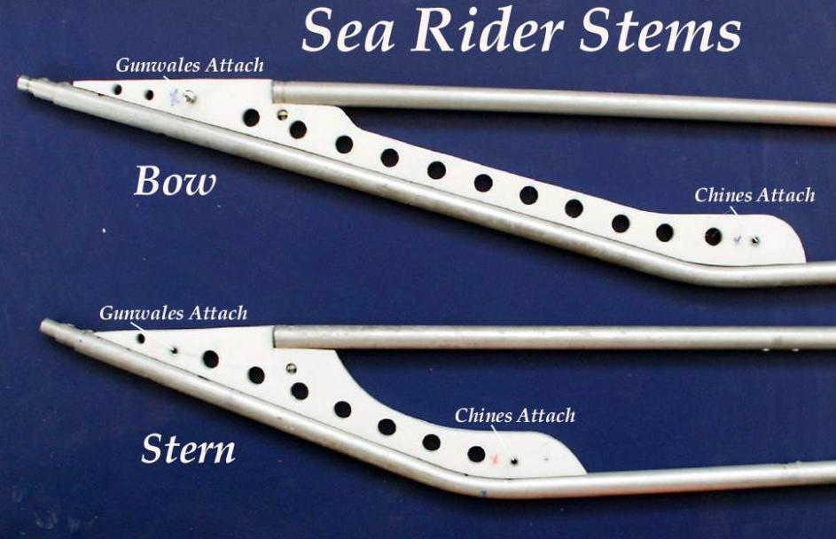

| Stem / Stern Plates (Alternative) 1 of 4 | Menu Previous Page Next Page |
|
 One Piece Stem Plates ( Sea Rider ) - These plates are a little more work than the multi-piece plates already described, but do provide an added margin of strength / rigidity to the ends of the kayak. I've used this type on most boats. They can be attached with either the wood screw or newer machine screw method. ( 6061-T6 tubing) |
|